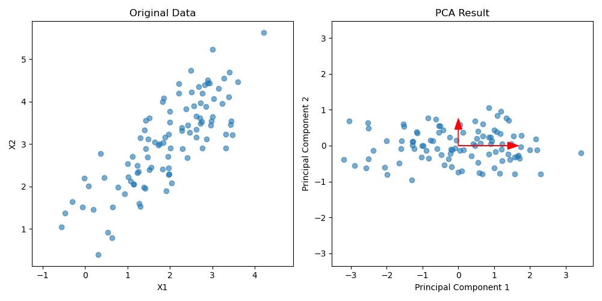

主成分分析
ここでは，互いに相関のある変数群について観測された多次元データを，情報をできるだけ失うことなく，もとの変数の線形結合で表される新たな変数へ要約する手法である主成分分析を学びます．
様々な指標についてまとめて理解したいときによく使います．また，独立成分分析などの基本にもなります．さらに，高次元データを低次元（より少数の変数）へ要約する次元圧縮の手法としても用います．
たとえば，以下の左の図のように x,y の2変数で観測されるデータ点の集合があったとします．このデータについて説明する時には，このままで議論するよりは，明らかに斜めに伸びているので回転させてあげて，伸びる方向を軸とした方が楽そうです．

右側の図が，実際にその作業をやった図で，これこそがPCAの結果でもあります．見れば分かりますが，回転させていますね．
こうすることで，もはや最初の x,y という軸ではなくなってしまいましたが，新しい軸 Component1, Component2 の下で考えるなら Component2 はあまり考慮しなくても良さそうです．明らかに横方向の広がりの方が大きいですしね．
と，いう考え方に従ってComponent2の成分を無視するのが，次元圧縮です．元々は x,y という2変数だったのが， Component1 という1変数のデータに置き換わりました．
今は2次元だったので，あまり有用性が分からなかったかもしれませんが，これがたとえば30変数のデータだったらどうでしょう．とてもありがたいはずです．
このように，「元のデータの情報をできるだけ失うことなく，新しく定義した軸」を主成分といいます．では，そんな軸はどうやって定めるのでしょうか．
結論から言うと，分散を最大化することになります．分散とは，平均からの広がりでした．
まずは，新しい軸を定義した時に，各データをその軸上に垂直におろしてきます（射影）．そうすることで，新しい軸成分にどれだけの値なのかが分かります．(よく分からない場合，x,y平面では各点を x 軸，y 軸に落とした値でデータを表現していることを思い出してください)
そうすると，その軸方向の「平均値」が求まります．
で，今回注目するのは分散でしたが，これは平均値から各点が平均的にどれだけ離れているのかを表すための量です．各点がばらつくほど大きな値ですね．
分散を最大化するというのは，新しく定義した軸方向にデータが大きく広がっている，という意味になります．
再びこの図を眺めてみれば，意図が分かるはずです．一番データが広がる方向が，すなわち一番データを説明できそうな「軸」になるわけですね．右のPCAの図も，実際に一番分散が大きくなる方向を横軸 (長い赤矢印) にとっています．
こうして得られた，「最も大きな分散になる射影軸」を第1主成分と言います．
さらに，第1主成分と直交するという条件のもとで，次に分散を最大化する射影軸を第2主成分と言います．上の図は元々2次元のデータなのでここまでですが，元のデータの次元が n あれば第n主成分まで求めることが出来，その求め方は第2主成分以降は同じです．
こうして得られた主成分のうち，上位いくつかだけを選んでデータを表現することで，上手くいけばデータを n より遥かに小さい次元数で記述することが出来るようになります．
では，求めていきます．簡単のため，とりあえず2次元で考えます．
まず，求めたい射影軸を
y=w1x1+w2x2
と定義します．ここで，x1,x2 は元データの次元です．英語と数学の点数，身長と体重，年収と寿命，そんな感じです．
そして，元々の n 個の 2 次元データを
x1=(x11x12),...,xn=(xn1xn2)
とします．さらに
w=(w1w2)
として，x をそれぞれ式 (1) の射影軸に射影すると，
yi=w1xi1+w2xi2=wTxi,i=1,2,...,n
と書けます．とりあえず，これで軸 y に対して2次元データ群 x を射影できました．
次は，この軸上での分散を求めます．が，そのためにはまず平均が必要です．
yˉ=n1i=1∑nyi=n1i=1∑n(w1xi1+w2xi2)=wTxˉ
となります．ここで xˉ=(xˉ1,xˉ2)T です．平均が求まったので，分散を求めます．普通に計算していくと，
sy2=n1i=1∑n(yi−yˉ)2=n1i=1∑n{w1(xi1−xˉ1)+w2(xi2−xˉ2)}2=w12n1i=1∑n(xi1−xˉ1)2+2w1w2n1i=1∑n(xi1−xˉ1)(xi2−xˉ2)+w22n1i=1∑n(xi2−xˉ2)2=w12s11+2w1w2s12+w22s22
と，なります．最後に，標本分散共分散行列の記法
S=(s11s21s12s22),sjk=n1i=1∑n(xjk−xˉj)(xjk−kˉ2)
を使うことで，
sy2=wTSw
と，分散をまとめられます．
では，主成分を求めます．おさらいすると，求める軸 y に射影した n の分散が最大化されるような w を求める問題です．ここで，当然の話として w にくそでかい値を持ってくれば，分散も無限に大きくなってしまいます．これでは意味がないので，制約条件として
wTw=1
を設けます．
これにより，制約条件(5)の下での条件付き極値問題となりますので，ラグランジュの未定乗数法を用いることができます．
この場合，ラグランジュ関数は
L(w,λ)=wTSw+λ(1−wTw)
になります．こいつを w で偏微分してあげると，
∂w∂L=∂w∂L(wTSw)+∂w∂L{λ(1−wTw)}=2Sw−2λw
となります．よって，結局分散が最大化されるような w については式 (7) より
Sw=λw
が求まり，求める w は標本分散共分散行列 S の最大固有値 λ1 に対応する固有ベクトル w1である事が分かります．
従って，ここで求めていた第1主成分は
y1=w11x1+w12x2=w1Tx
であることが分かります．さらに，第1主成分 y1 の分散は，式(4)
sy2=wTSw
で求まりますが，ここで
Sw1=λ1w1
の両辺に左から w1T をかけることで得られる
w1TSw1=λ1w1Tw1=λ1
を考えると，
sy2=wTSw=λ1
となり，第1主成分の分散は第1固有値の値であることが分かります．
では，第2主成分を求めます．次に求める問題は，与えられた n 個の2次元データを y2=w1x1+w2x2 へ射影した際，第1主成分の時同様に制約条件 (5) の wTw=1 に加え，先程求めた第1主成分 y1 と直交する，すなわち
w1Tw=0
という新しい制約条件の下で wTSw を最大化する w を求める問題になります．ラグランジュ関数は
L(w,λ,γ)=wTSw+λ(1−wTw)+γw1Tw
になります．偏微分して0とおいてみると，
∂w∂L=∂w∂L(wTSw)+∂w∂L{λ(1−wTw)}+∂w∂L{γw1Tw}=2Sw−2λw+γw1=0
となります．
ここで，式 (12) の各項に左から w1T をかけてみると，
2w1TSw−2λw1Tw+γw1Tw1
となり，制約条件から
2w1TSw+γ=0
となります．Sw1=λw1であることを考えると，w1TS=λ1w1Tでもあるので，式 (13) の 2w1TSwは 2w1TSw=2λ1w1Tw=0 となるので，γ=0であることが分かります．
ということで，式 (12) にγ=0をいれると
2Sw−2λw+γw12Sw−2λw∴Sw=0=0=λw
となり，結局のところ第2主成分についても，解wは標本分散共分散行列の2番目の固有値 λ2 に対応する固有ベクトル w2 であり，分散は λ2 となります．
よって，第2主成分は
y2=w21x1+w22x2=w2Tx
になります．
結局，主成分分析が行う，分散を最大化する軸を順に見つけて射影していくという問題は，標本分散共分散行列Sの固有値問題に帰着されることが分かりました．
一般に，変数が m 個あるデータ x=(x1,x2,...,xm)T が n 個観測されたとき，標本分散共分散行列 S の固有値を
λ1≥λ2≥...≥λm
として，対応する長さ1に正規化された m 次元の固有ベクトルを
wm=wm1wm2⋮wmm
とすると，第 m 主成分とその分散は
ym=wmTx,var(ym)=λm
で求められることになります．